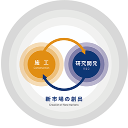
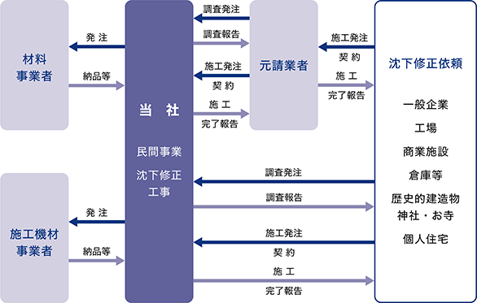
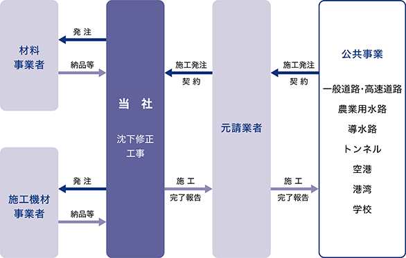
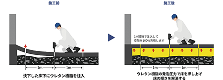
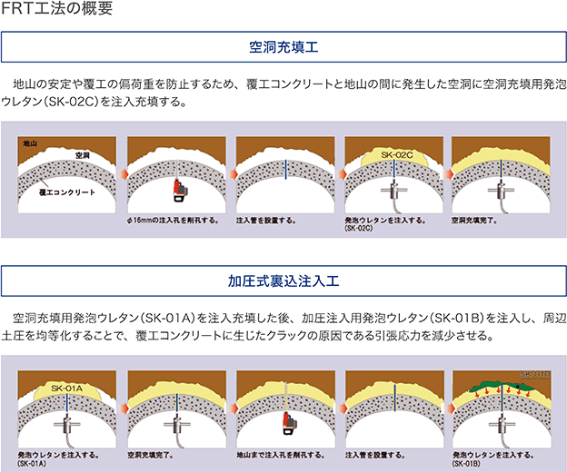

(注) １．当社は連結財務諸表を作成しておりませんので、連結会計年度に係る経営指標等の推移については、記載しておりません。
２．持分法を適用した場合の投資利益については、当社は関連会社を有していないため記載しておりません。
３. 当社は、2022年12月23日を払込期日とする普通株式100,000株をブックビルディング方式による募集を実施しております。
４. 第20期の１株当たり配当額には、特別配当５円を含んでおります。
５．潜在株式調整後１株当たり当期純利益については、潜在株式が存在しないため記載しておりません。
６．第17期及び第18期の株価収益率は、当社株式が非上場であるため記載しておりません。
第19期の株価収益率はTOKYO PRO Marketの株価に基づいて記載しております。第20期以降の株価収益率は、名古屋証券取引所ネクスト市場によるものです。
なお、当社株式は2022年12月26日付で、名古屋証券取引所ネクスト市場に上場いたしました。
７．第17期についてはキャッシュ・フロー計算書を作成しておりませんので、キャッシュ・フローに係る各項目については記載しておりません。
８．第17期から第20期の株主総利回り及び比較指標は、2022年12月26日に名古屋証券取引所ネクスト市場に上場したため、記載しておりません。
９．第18期以降の財務諸表については、「財務諸表等の用語、様式及び作成方法に関する規則」（昭和38年大蔵省令第59号）に基づき作成しており、金融商品取引法第193条の２第１項の規定に基づき、みおぎ監査法人により監査を受けております。なお、第17期については、「会社計算規則」（平成18年法務省令第13号）の規定に基づき算出した各数値を記載しており、金融商品取引法第193条の２第１項の規定に基づいた、監査を受けておりません。
10．最高株価及び最低株価は、第19期は東京証券取引所TOKYO PRO Market市場におけるものであり、第20期以降は名古屋証券取引所ネクスト市場におけるものであり、それ以前の株価については該当事項がありません。
11. 「収益認識に関する会計基準」（企業会計基準第29号 2020年３月31日）等を第20期の期首から適用しており、第20期以降に係る主要な経営指標等については、当該会計基準等を適用した後の指標等となっております。
当社の設立以降、現在に至るまでの沿革は、以下のとおりであります。
（注）当事業年度末日後、有価証券報告書提出日までに以下の事象が発生しております。
2024年２月 「ビバリウム装飾品」特許取得(特許第7445290号)
当社は、「健康第一」「安全第一」「家庭第一」という基本理念のもと、スピードと環境を重視した経営を行い、社会貢献度の高い研究開発型企業となることを経営方針としています。工場・倉庫・商業施設や、一般の住宅などの建物において、地震や地盤の不同沈下(注１)を原因として生じたコンクリート床の沈下・傾き・段差・空隙・空洞を完全ノンフロン(注２)のウレタン樹脂及び小型機械を用いた独自の「アップコン工法」によって修正する施工を主力事業として展開しております。
従来、コンクリート床の沈下修正時には、既設のコンクリートを取り壊し、新たなコンクリート床を打設するコンクリート打替え工法などが用いられてきましたが、アップコン工法では、既設のコンクリート床を破壊するなどの大規模な解体工事が不要であり、また機械や荷物の撤去・移動・引越し作業も必要としないことから、操業や営業を止めることなく短期間でコンクリート床の傾きを修正することを可能としております。
その他、アップコン工法を応用した技術を用いて、主に公共工事として道路・空港・港湾に生じた段差の修正や空隙・空洞充填なども行っております。
また、当社では新たな事業展開推進のため、複数のプロジェクトを進行させ、発泡ウレタン樹脂を用いた新規応用分野の研究開発を継続しており、2015年には産官学連携で共同開発した工法を用いた施工(農業用に用いられている水路トンネルの維持・補修に係る施工)の事業化に成功しております。
軟弱地盤の多いわが国において、ウレタン樹脂を使用した沈下修正工事を行うことで、暮らしやすい社会を築くとともに、大量生産、大量消費を特徴としてきたこれまでの「フロー型社会」から、住宅や橋・道路などの社会インフラを長寿命化させることによって、持続可能で豊かな社会を実現する「ストック型社会」の形成に貢献する社会貢献度の高い研究・開発企業を目指しております。
当社は、硬質発泡ウレタン樹脂(注３)の新規用途開発への研究開発に取り組むことで、自ら市場を創りながら事業を開拓していくサイクルを目指す研究開発型企業を目指しております。
(注) １．建物などの構造物に生じる沈下量のうち、対象とする領域の最大沈下量と最小沈下量との差。
２．日本工業規格(JIS)Ａ9526：2015において、オゾン破壊係数(ODP)が０、かつ、地球温暖化係数(GWP)が50未満である発泡剤ハイドロフルオロオレフィン(HFO)を使用した処方技術では、ハイドロフルオロオレフィン(HFO)はフロン類には該当しないと明記。
３．Ａ液(ポリオール)とＢ液(ポリイソシアネート)の２液により、短時間で液体→クリーム状態→ゲル状態→固体と化学反応により状態を変えながら形成される樹脂。
アップコンのビジネスモデル

１．具体的ビジネス
企業の生産・販売活動の拠点である工場・倉庫・商業施設のほか、一般の住宅など、地震や地盤沈下で傾いたコンクリート床を修正いたします。
工場床下に空隙・空洞が発生、装置が振動し不良品率が増加、倉庫の床が傾き荷物が積み上げられない、段差でフォークリフトの走行が困難、といったこれらの原因である傾いたコンクリート床を業務・操業を止めずに床の沈下修正を行います。
地震や地盤沈下によって発生した住宅の傾きを、基礎下にウレタン樹脂を注入し基礎から傾きを修正するものです。住人は住宅に居住したまま、引越しや荷物の移動も必要ありません。
施工に先立っての調査、マンションのエントランス及び事務所等の沈下修正工事が含まれます。
わが国の農業用水路、道路、空港等の老朽化した社会インフラの機能回復に資するために各研究開発プロジェクト(既存工法の応用技術を含む)により開発された技術を新規事業として公共工事に展開したものです。
小規模断面トンネルに特化して研究開発され、老朽化などによって発生したトンネル覆工背面の空洞にウレタン樹脂を充填させることで農業用水路などの突発的な崩壊を防止する、小規模断面トンネルの維持・補修を行う工事です。
高速道路・国道他で多用されているコンクリート舗装版に生じた、沈下・段差・バタつき・空隙・空洞などの変状を、専用に開発した高強度ウレタン樹脂を使用して、開削せずに短工期で修正します。短工期であるため、交通規制の早期開放を実現する工法です。
また、変状を修正するだけでなく表層路盤のゆるみも解消できる工事です。
地震によって生じた港湾の岸壁部の路盤の段差やコンテナターミナル内のRTG（タイヤ式門型クレーン）走行路盤に生じた沈下を夜間工事のみなど短工期で修正できる工事です。
地震や地盤沈下によって生じた空港エプロンの段差・沈下、防衛施設及び学校体育館のステージのたわみや床の傾きをウレタン樹脂を使用して短工期で修正する工事です。
［事業系統図］
事業系統図(民間事業)

事業系統図(公共事業)

沈下・段差・傾き・空隙・空洞などが生じた既設コンクリート床に、１ｍ間隔で直径16mmの小さな穴を開け、ウレタン樹脂を注入します。ウレタン樹脂は短時間で発泡し、その圧力でコンクリート床を床下から押し上げて傾きや段差などを修正します。
ウレタン樹脂の注入は、既設コンクリート床の高さを計測機器で常時ミリ単位で監視しながら行い、ウレタン樹脂の最終強度は約60分で発現します。床下に空隙・空洞が発生している場合、同じ方法でウレタン樹脂を注入、ウレタン樹脂自らが発泡する特性によって、狭い隙間でも入り込み空隙を充填することが可能です。
(注) コンクリート床スラブとは、鉄筋コンクリート造(RC造)のコンクリート床を意味する言葉。
［施工イメージ図］

アップコン工法の特長
■業務・操業を止めずに施工が可能
■短工期/従来工法(コンクリート打替え)と比較して工期１/10
■環境に安全なノンフロンウレタン樹脂を使用
■高い技術力と資格を持った自社社員による安心の施工
■施工機材一式がコンパクト(少ないスペースで施工が可能)
(Functional Restoration Technologies for Agricultural Ditch Tunnels：以下「FRT工法」という。)
「FRT工法」とは、日本全国の農業用水路・導水路など、老朽化によりトンネルの覆工背面に生じた空洞を硬質発泡ウレタンで充填する補修工事によって、トンネルの崩壊を防ぎ、壊さずに延命化を図ることを目的としております。
高度成長期に整備された農業用水路トンネルでは、覆工背面に空洞が発生したり、空洞が原因でトンネルの側面にクラックが生じるなど、その多くが老朽化によって補修が必要とされております。農業用水路トンネルの老朽化対策として、当社、アキレス株式会社、岡三リビック株式会社、株式会社ジオデザインの４社で研究会を立上げ、島根大学、石川県立大学と、農林水産省の2010年度～2012年度の官民連携新技術研究開発事業を活用し、従来の改修工事に拠らずにトンネルが有する本来の機能を回復する「FRT工法」を開発し、2016年１月期事業化に成功しております。
農水路のトンネルの補修施工が可能であるのは、農閑期(11月から２月)となっております。従来の工法では、施工にあたって規模が大きい設備を必要としていたことから、電気設備を引くだけで２週間程度(設置―撤去に約１か月)かかってしまい、施工に時間をかけることができませんでしたが、当社が使用するコンパクトなウレタン注入機を用いることで、大掛かりな設備が不要となり、施工までの準備期間が大幅に短縮され短工期の施工となります。
トンネルはアーチ状で全方向から一定の同じ力がかかっていないと崩れてしまう構造(アーチアクション)となっておりますが、当該工法は、地盤が緩んで発生した空洞を充填し、なおかつ上部から圧力を加えてトンネルの形状をもとに戻す(機能を回復させる)ことを目的としております。

該当事項はありません。
（注) １．従業員数は就業人員数であります。
２．平均年間給与は、賞与及び基準外賃金を含んでおります。
３．当社は沈下修正事業の単一セグメントであるため、セグメント別の従業員数の記載を省略しております。
労働組合は結成されておりませんが、労使関係は円満に推移しております。
(３)管理職に占める女性労働者の割合、男性労働者の育児休業取得率及び労働者の男女の賃金の差異
当社は、「女性の職業生活における活躍の推進に関する法律（平成27年法律第64号）」及び「育児休業、介護休業等育児又は家族介護を行う労働者の福祉に関する法律（平成３年法律第76号）」の規定による公表義務の対象ではないため、記載を省略しております。